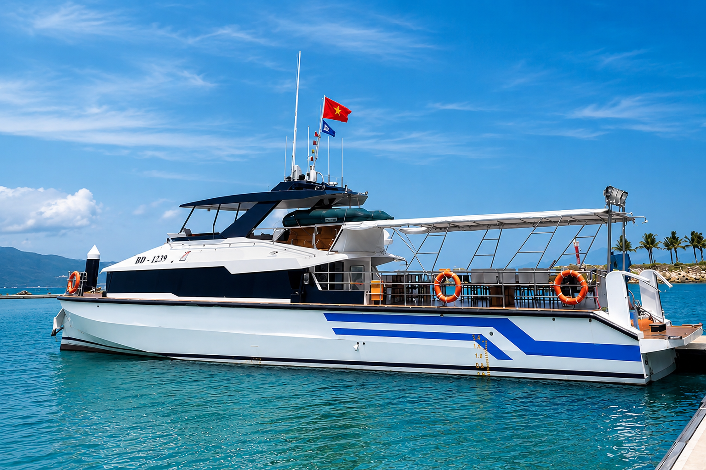
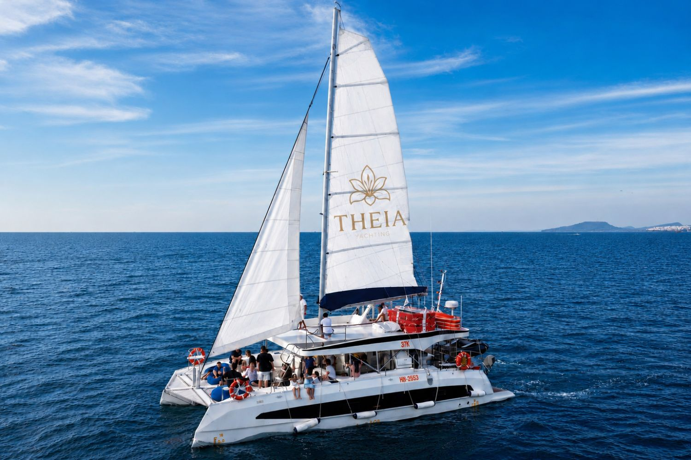

Princess 56 – Diamond là du thuyền động cơ rộng rãi với flybridge, phù hợp cho các chuyến charter riêng tại Nha Trang, những ngày thư giãn trên biển cùng gia đình và bạn bè, cũng như các dịp kỷ niệm và sự kiện riêng.
Du thuyền có sức chứa tối đa 12 khách, với không gian rộng rãi để cả nhóm thoải mái dùng bữa, trò chuyện, nghỉ ngơi và tận hưởng khung cảnh tuyệt đẹp của vịnh Nha Trang từ trên biển.
Một trong những điểm nổi bật của Princess 56 là flybridge rộng rãi ở tầng trên. Đây là nơi lý tưởng để thư giãn trong suốt hành trình, tắm nắng, ngắm biển và tận hưởng tầm nhìn thoáng rộng ra vịnh. Phía trước du thuyền cũng có khu vực tắm nắng riêng, thích hợp để nghỉ ngơi và đón gió biển.
Bên trong là không gian salon thoải mái cùng các tiện nghi cần thiết cho một ngày trọn vẹn trên biển. Du thuyền được trang bị khu bếp đầy đủ với lò vi sóng, phòng tắm và nhà vệ sinh, vòi sen nước ngọt, khu vực để hành lý, Wi-Fi và ổ cắm điện 220V.
Trong hành trình, du khách có thể dừng lại để bơi lội và lặn ngắm san hô, tham gia câu cá hoặc đơn giản là ở lại trên du thuyền, tận hưởng không khí biển và khung cảnh Nha Trang. Đồ ăn và thức uống có thể được chuẩn bị trước theo sở thích của nhóm và phục vụ ngay trên du thuyền.
Princess 56 – Diamond đặc biệt phù hợp cho những chuyến đi cùng gia đình, tiệc sinh nhật, gặp gỡ bạn bè hoặc các dịp riêng tư khi bạn muốn tận hưởng trọn vẹn một ngày trên biển mà không phải ghép cùng những nhóm khách khác.
Chương trình
CHARTER RIÊNG | 5 GIỜ
Tận hưởng vài giờ thư giãn trên vịnh Nha Trang cùng Princess 56. Quý khách có thể dừng lại để bơi lội và lặn ngắm san hô, câu cá hoặc thư giãn trên flybridge rộng rãi trong khi ngắm nhìn toàn cảnh vịnh.
Với không gian trong nhà và ngoài trời thoải mái, Princess 56 là lựa chọn phù hợp cho gia đình, nhóm bạn và những buổi tiệc riêng trên biển.
CHARTER RIÊNG | 10 GIỜ
Dành trọn một ngày khám phá vịnh Nha Trang trên Princess 56 và tận hưởng hành trình theo nhịp độ của riêng bạn.
Bơi lội, lặn ngắm san hô, câu cá, nghỉ ngơi trên flybridge và thưởng thức đồ ăn, thức uống ngay trên du thuyền. Thực đơn có thể được chuẩn bị theo sở thích của nhóm.
Hành trình 10 giờ là lựa chọn lý tưởng cho những ai muốn có thêm thời gian trên biển, thong thả tận hưởng du thuyền và khám phá vẻ đẹp của vịnh Nha Trang.
Thông số kỹ thuật
- Nhà sản xuất
- Princess Yachts
- Chiều dài tổng thể
- 18,11 m (59,5 ft)
- Chiều rộng
- 4,76 m (15,6 ft)
- Mớn nước
- 1,29 m (4,2 ft)
- Sức chứa
- Tối đa 12 khách
- Cấu hình
- Day Charter
Đặc trưng
- Flybridge rộng rãi với khu vực thư giãn
- Khu vực tắm nắng phía mũi tàu
- Salon sáng và thoải mái
- Hệ thống âm thanh cao cấp
- Vòi sen nước ngọt
- Khu bếp được trang bị đầy đủ
- Phòng tắm và nhà vệ sinh
- Khu vực để hành lý
- Wi-Fi miễn phí
- Ổ cắm điện 220V
- Phù hợp cho các chuyến charter riêng, tiệc và những ngày thư giãn trên biển
Giá đã bao gồm
- Xe đưa đón hai chiều từ khách sạn đến bến du thuyền
- Đội ngũ thuyền viên chuyên nghiệp
- Đồ uống chào mừng
- Trái cây tươi theo mùa
- Đồ ăn và thức uống
- Khăn tắm biển
- Dụng cụ lặn ngắm san hô
- Dụng cụ câu cá
- Thực đơn đồ ăn và thức uống có thể được lựa chọn và điều chỉnh theo sở thích của quý khách, sau đó phục vụ ngay trên du thuyền.
Vị trí · Nha Trang, Việt Nam
Khám phá vịnh Nha Trang từ một góc nhìn khác trên Princess 56 – Diamond, giữa những hòn đảo nhiệt đới, làn nước trong xanh và cảnh quan ven biển tuyệt đẹp.
Vịnh Nha Trang là điểm đến lý tưởng để bơi lội, lặn ngắm san hô, câu cá và thư giãn trên du thuyền. Với flybridge rộng rãi và cách bố trí thoải mái, Princess 56 mang đến nhiều không gian để cả nhóm tận hưởng chuyến đi cùng nhau.
Từ một ngày thư giãn cùng gia đình đến tiệc sinh nhật hoặc buổi gặp gỡ riêng với bạn bè, charter Princess 56 là cách thoải mái và riêng tư để khám phá Nha Trang từ biển.
16 khoảnh khắc trên Diamond


Du thuyền khác
 Nha Trang
Nha TrangDu thuyền Merry Fisher 795 – Jade
Motor Yacht Merry Fisher 795 – Jade là lựa chọn phù hợp cho những ai yêu thích những chuyến du ngoạn riêng tư, quy mô nhỏ và muốn tận hưởng một ngày trên biển theo cách thoải mái nhất.

Nha TrangDu thuyền cao tốc – TITAN
Du thuyền cao tốc Titan là một du thuyền máy rộng rãi, được thiết kế cho những chuyến đi biển thoải mái và di chuyển nhanh giữa các đảo tại Việt Nam.

Nha TrangDu Thuyền Catamaran 1360 - Coral
Du thuyền catamaran cao cấp dài 13,6 mét được thiết kế dành cho những ai tìm kiếm sự riêng tư, thoải mái và những khoảnh khắc thư giãn trọn vẹn trên biển.